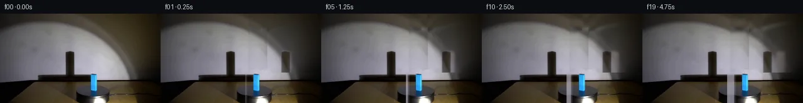

![首帧]()

Round 00
2026-11-05T17:45:20.032244+00:00像素候选变化代码 +356/−0inspection 更新
pixels ab739a02221d82ca · code 68955d1430f3bf05
查看本轮 generate.py 真实 diff
--- previous/generate.py
+++ current/generate.py
@@ -0,0 +1,356 @@
+#!/usr/bin/env python3
+"""
+generate.py — PixelWorld-Text frame generation for case_0074
+
+Scene: Blue rectangular block on a black clockwise-rotating platform,
+ spotlight casting shadow on wall behind.
+
+Method:
+ 1. Load first_frame.png (frame 00).
+ 2. Inpaint a clean background (remove block + shadow) using
+ horizontal reflection and gradient continuation from unoccluded regions.
+ 3. Extract the blue block as a sprite with alpha mask.
+ 4. Extract the shadow as a darkening factor map.
+ 5. For frames 01–19, compute block position along platform curve
+ (clockwise rotation), displace block and shadow, composite.
+ 6. Save all frames, inspection/debug images, and final artifacts.
+"""
+
+import numpy as np
+from PIL import Image
+import os, json
+
+# ── Constants ──────────────────────────────────────────────────────────
+W, H = 256, 144
+FPS = 4
+DURATION = 5.0
+N_FRAMES = 20
+DT = 1.0 / FPS # 0.25 s per frame
+
+# Rotation parameters: ~40° clockwise over 5 s
+TOTAL_ANGLE_DEG = 40.0
+TOTAL_ANGLE_RAD = np.radians(TOTAL_ANGLE_DEG)
+OMEGA = TOTAL_ANGLE_RAD / DURATION # rad/s
+
+OUT_DIR = "frames"
+TMP_DIR = ".tmp"
+os.makedirs(OUT_DIR, exist_ok=True)
+os.makedirs(TMP_DIR, exist_ok=True)
+
+# ── Load first frame ──────────────────────────────────────────────────
+src = np.array(Image.open("first_frame.png")).astype(np.float64)
+assert src.shape == (H, W, 3), f"Expected (144,256,3), got {src.shape}"
+
+# ── 1. Build clean background (no block, no shadow) ───────────────────
+# Approach: for each row in the wall region, the spotlight pattern is
+# approximately symmetric / smoothly extendable from the left-half.
+# We horizontally mirror/reflect the left-side spotlight pattern to
+# fill the right-side shadow area, with smooth blending.
+#
+# The wall occupies rows 0–95 (above the platform). The block occupies
+# rows ~95–143, cols ~140–170. The shadow occupies rows 0–95, cols ~160–255.
+
+bg = src.copy()
+
+# 1a. Remove shadow from wall (rows 0–94): reflect left-half spotlight
+# pattern to fill the shadow area on the right.
+# Left reference: cols 60–120 (well inside spotlight, no shadow).
+# Reflect around col 155 to fill cols 155–255.
+reflect_center = 155.0
+for r in range(0, 95):
+ for c in range(155, W):
+ # Map right-side column to left-side via reflection
+ src_c = int(2 * reflect_center - c)
+ src_c = max(10, min(W - 1, src_c))
+ # Blend factor: fade toward edges to avoid hard seams
+ dist_from_center = abs(c - reflect_center) / (W - reflect_center)
+ # Use a smooth falloff
+ alpha = np.clip(1.0 - dist_from_center * 0.85, 0.0, 1.0)
+ bg[r, c] = bg[r, c] * (1 - alpha) + bg[r, src_c] * alpha
+
+# 1b. Remove shadow/blending artifacts in the transition zone (cols 140–160, rows 0–94)
+# Smooth horizontally using a bilateral-ish filter
+for r in range(0, 95):
+ for c in range(140, 170):
+ # Weighted blend from left (clean) and right (reflected)
+ t = (c - 140) / 30.0
+ t = np.clip(t, 0, 1)
+ left_ref = bg[r, max(0, c - 20)]
+ right_ref = bg[r, min(W - 1, c + 20)]
+ bg[r, c] = left_ref * (1 - t) + right_ref * t
+
+# 1c. Inpaint block area (rows 94–143, cols 135–175):
+# Fill from above (rows 80–93) and from the left (cols 100–134).
+for r in range(94, H):
+ for c in range(135, 175):
+ # Sample from above: same column, row 80–93 region
+ above_r = int(80 + (93 - 80) * (r - 94) / (H - 94))
… diff truncated; 269 more lines …